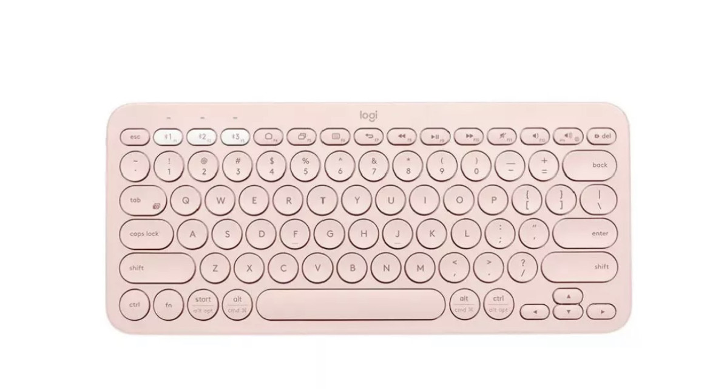

Membrane Keyboard
The most widely used keyboards for everyday use are membrane keyboards. Under the keys, they have a flexible membrane layer. Because the keys are fairly close to one another, there is significantly less noise when you press them. But mechanical keys don't provide the same tactile feedback. Although membrane keyboards are significantly less expensive, they typically don't last as long as their mechanical counterparts.
